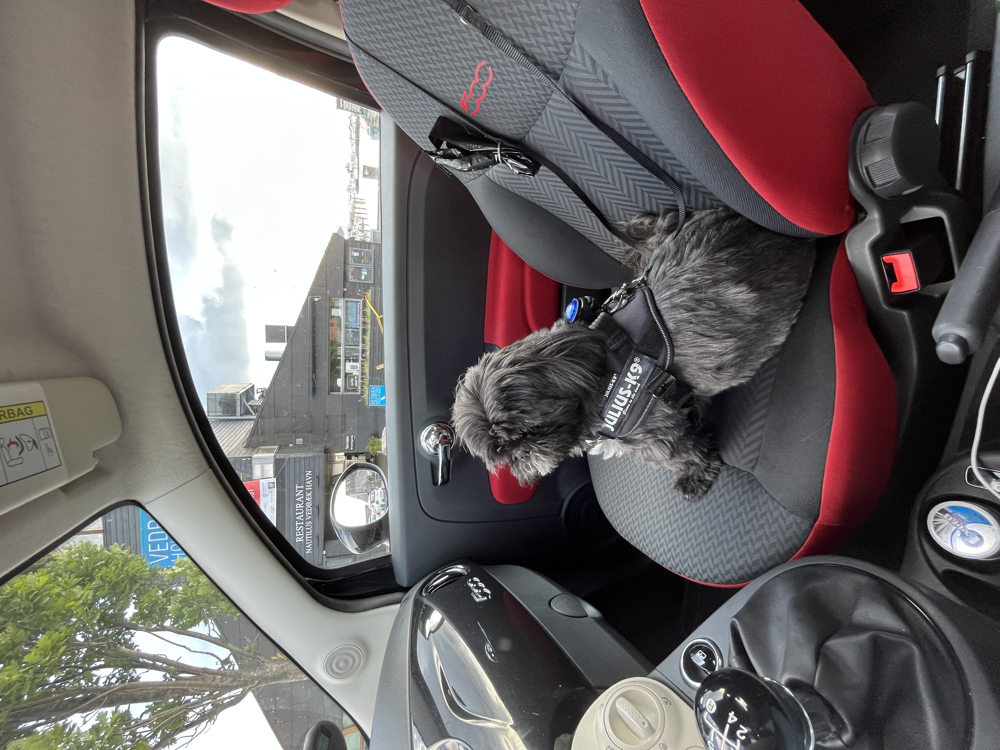
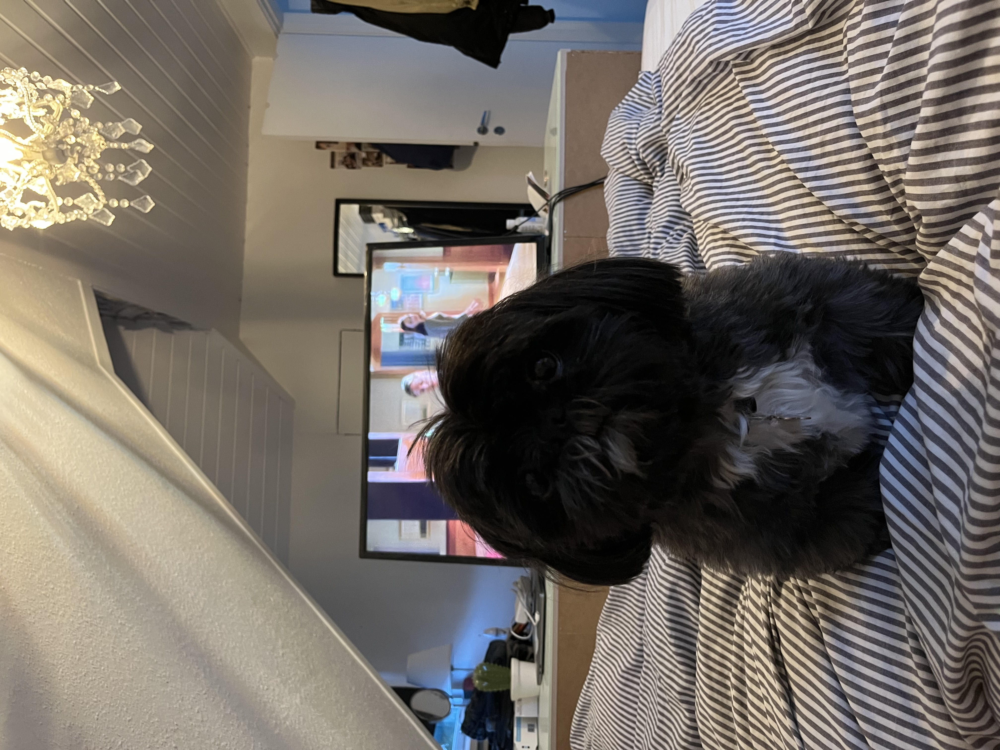

Beskrivelse
Pepsi er min hund. Han er en shih tzu, og han er 10 år gammel. Han sover stort set hele dagen og er virkelig doven. Han elsker at gå ture og hilse på andre hunde.
 Pepsi er meget tyk (faktisk overvægtig) og vil altid gerne være tæt på mennesker. Han ligger sig ofte ved siden af os, når vi ser tv eller arbejder. Hans yndlingsbeskæftigelse er at spise og sove.
Egenskaber
- Sød
- Blød
- Kælen